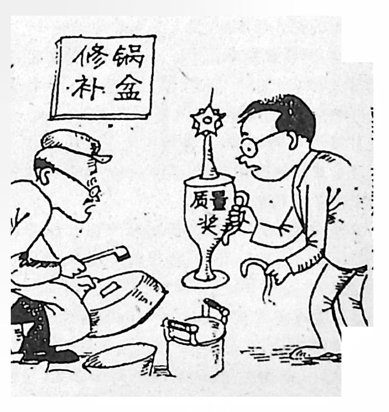

佚名 《人事》1990年第8期（总第59期），第37页
劳驾！把奖杯修一修
Excuse Me — Could You Mend This Trophy?
- Caption
- 劳驾！把奖杯修一修
Excuse me! Could you mend this trophy? - Text in the drawing
- 修锅补盆 / 质量奖
Pots and pans mended / Quality award - Description
- At a tinker's stall that mends pots and pans, an anxious man in glasses holds out a trophy labeled “quality award” — which itself needs repairing.
- Note
- Quality awards were handed out freely in 1980s product competitions; here the award itself is shoddy.
- Artist
- Unattributed 佚名
- Published in
- 《人事》1990年第8期（总第59期）, p. 37
- Themes
- Formalism · False reporting and boasting

Cite
Unattributed, “劳驾！把奖杯修一修” [Excuse Me — Could You Mend This Trophy?], Renshi (Personnel) 《人事》, 1990, no. 8, p. 37.